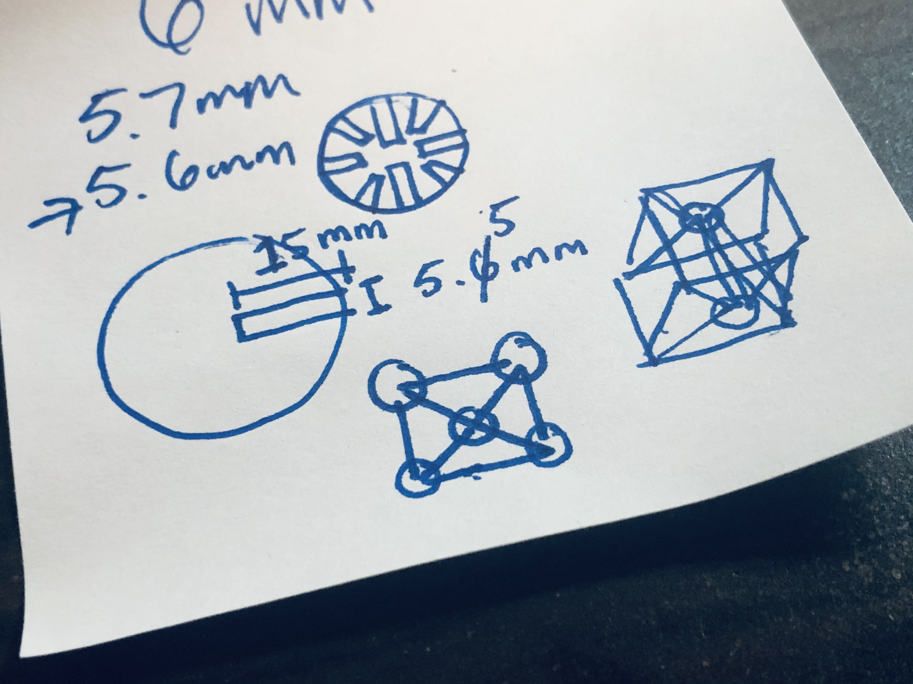
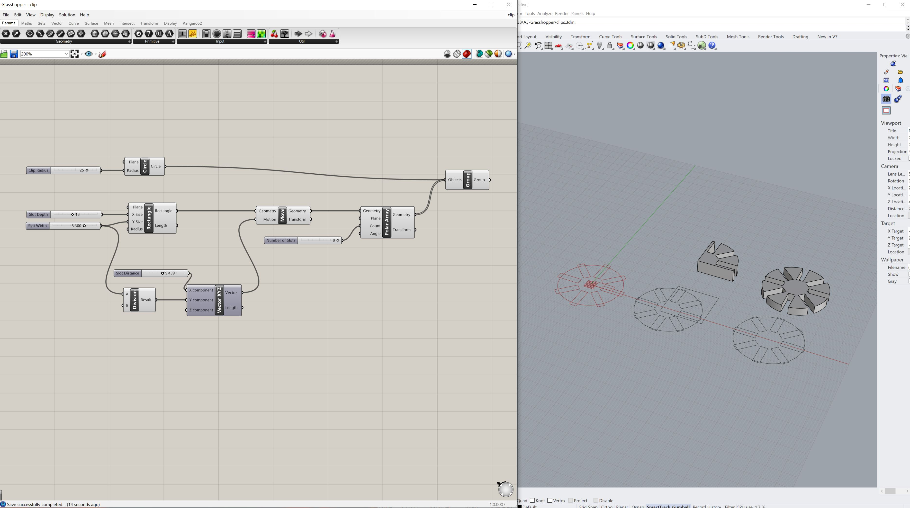
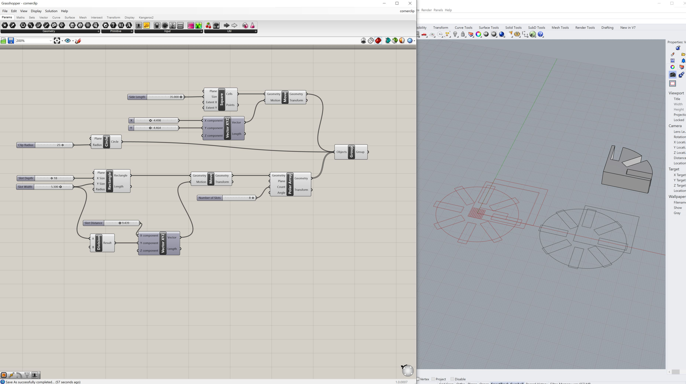
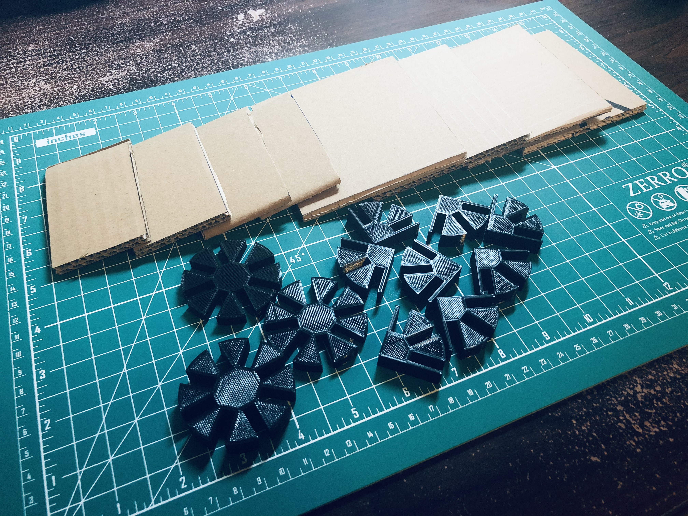
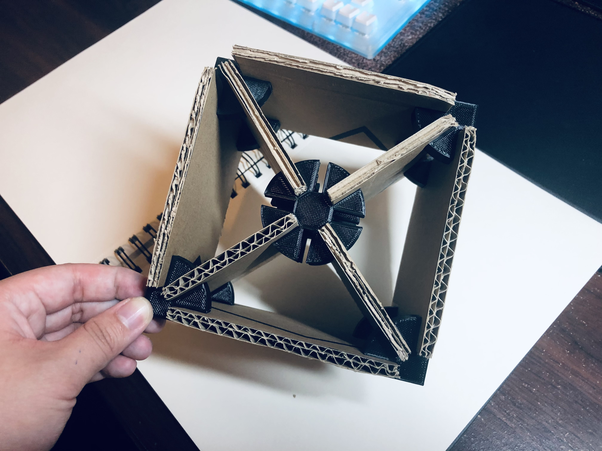
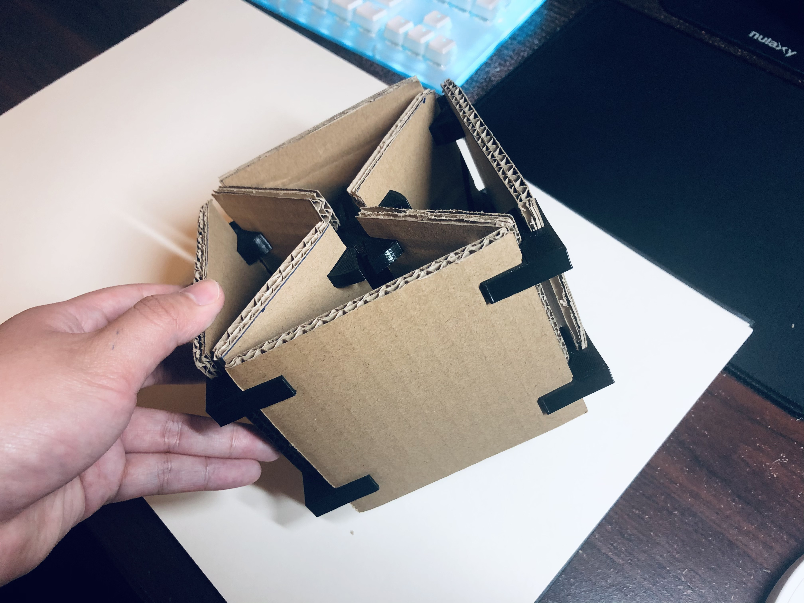
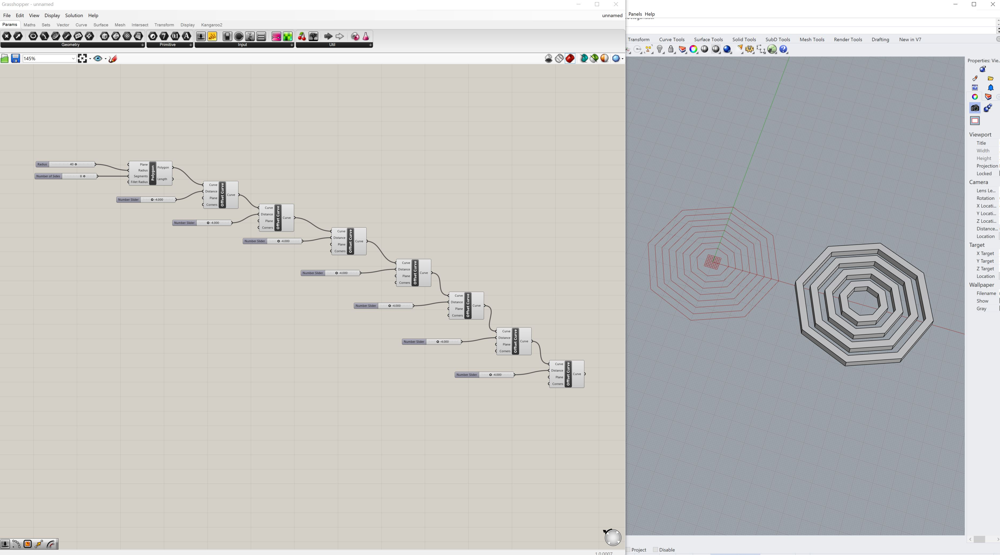
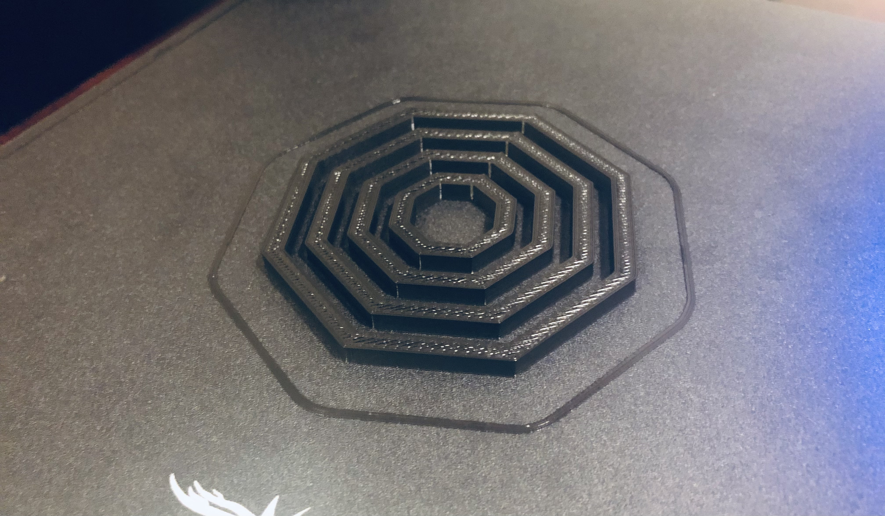
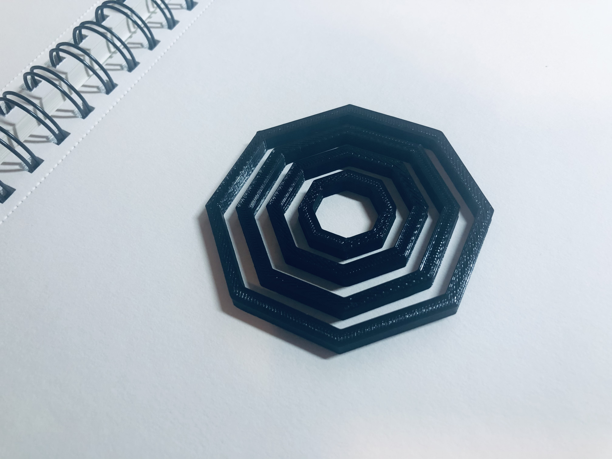
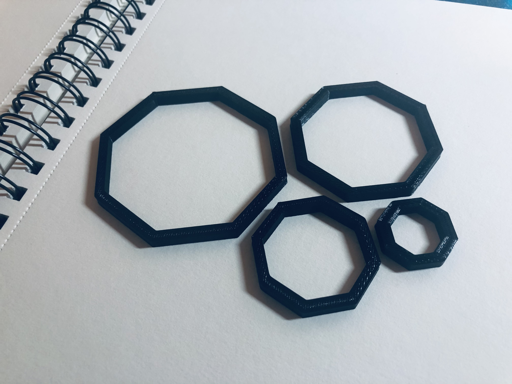

Getting Started With Grasshopper

The Goal
Create Grasshopper definitions of clips to hold together cardboard and a Grasshopper definition to create nested structures!
Designing the Clips
Prior to working in Grasshopper, I first determined what I wanted my clips to look like! I roughly sketched what I had in mind on a sticky note and added some approximate dimensions for slot width and depth based on my cardboard's thickness. Using my caliper, the cardboard was around 6mm, so I wanted the clip's slot width to be smaller than that. This way, the clip would firmly attach to the cardboard. I wanted the assembled cardboard construction to look like an open cube with an X-shaped internal structure. The pieces of cardboard would be held together by circular clips with 8 slots placed at multiple angles.
Making the Clips in Grasshopper
To make my clips, I first created a circle. I then added a rectangle as the first slot. These rectangles were multiplied using polar array. I moved shapes around with Move and Vector XYZ. Since I wanted the rectangle to be aligned with the center of the circle, I applied division to move the slot over by half of its width. When working with dimensions that I wanted to vary easily, like radius or slot width or slot depth, I connected these elements with number sliders. With number sliders, I'm able to adjust the range so that it works the best for my design. For example, I recognized that my slot widths could not be wider than 5.7mm, so that was set as the maximum on my number slider. When my clip looked as intended, I grouped together my elements and baked them. From Rhino, I used CurveBoolean to extract my final clip and extruded it to a height of 6.5mm.
Making Corner Clips in Grasshopper
After exporting the clip STL and slicing it in Cura, I recognized that it would take too long to print 10 of these clips (~8 hours). It would also be a waste of filament, given that only 3 out of the 8 slots are utilized for 8 out of the 10 clips (I ultimately printed 11 in total). Because of this, I decided to go back into Grasshopper to modify the clip definition to make corner clips. I added a square to section off a portion of the clip. After baking, I applied CurveBoolean to extract the corner piece I needed. I extruded the corner clip to a height of 10mm. Then, I started printing!
Printing the Clips and Assembly
Turning 8 of the original clips into corner clips cut down the printing time in half. Printing 8 corner clips and 1 full clip took around 4.5 hours. In total, I spent around 6.5 hours printing clips including 2 test prints. As the clips were printing, I cut my cardboard. Assembly was slightly difficult since I had to squeeze cardboard into multiple slots at different angles at the same time, but once finished, the construction was super sturdy! I threw the construction at the ground (carpet and concrete) several times and often really aggressively, and it didn't come apart!
  Nested Structures
I wanted to create nested structures with octagons. In Grasshopper, I created a polygon component and applied a number slider to adjust the radius and number of sides (n=8). I then applied multiple offsets to the polygon before grouping all the lines together, baking it, and extruding the shapes in Rhino. I ended up with 4 total octagon structures of all different sizes when printed. I'm hoping to use these structures as a guide to draw perfect octagons on paper in the future.
   Download all Rhino, Grasshopper, and STL files on GitHub.